vignettes/integrate_misty_analysis.Rmd
integrate_misty_analysis.RmdThis tutorial explains how to integrate MISTy with Giotto to analyze a human lung cancer dataset derived from Xenium, demonstrating how variations in cell-type composition and pathway activity shape spatial gene expression patterns.
Setting up the work environment and loading necessary libraries.
# Configure Python environment for Giotto
library(reticulate)
use_python("C:/Users/your_username/anaconda3/envs/giotto_env/python.exe", required = TRUE)
# Load core libraries
library(Giotto)
library(mistyR)
# Parallel processing
library(future)
plan(multisession)
# Data manipulation libraries
library(data.table)
library(janitor)
library(Matrix)
library(dplyr)
library(tidyverse)
# Pathway analysis libraries
library(msigdbr)
library(decoupleR)
library(SummarizedExperiment)Setting up data paths and downloading the Xenium lung cancer dataset.
# Set up paths
data_path <- "/Users/your_username/data/xenium_lung"
save_dir <- '/Users/your_username/results/xenium_lung'
dir.create(save_dir, recursive = TRUE)
# Download the mini dataset
options("timeout" = Inf)
download.file(
url = "https://zenodo.org/records/13207308/files/workshop_xenium.zip?download=1",
destfile = file.path(save_dir, "workshop_xenium.zip"),
mode = "wb", # Force binary mode
method = "libcurl", # Use libcurl method
timeout = 300 # Set longer timeout
)
# Extract the downloaded data
unzip(file.path(save_dir, "workshop_xenium.zip"),
exdir = data_path)Note: This is a subset of the full dataset.
# Full: -16.039, 12342.984, -3511.515, -294.455 (xmin, xmax, ymin, ymax)
# Mini: 6000, 7000, -2200, -1400 (xmin, xmax, ymin, ymax)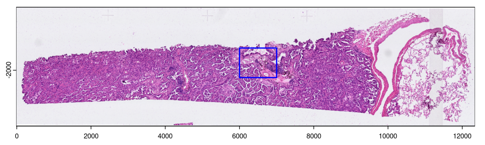
Image from Section 10.1.2 of the 2024 Giotto Workshop.
Note: The following code demonstrates the setup of a Giotto object, including loading expression data, cell metadata, and morphology images. These preprocessing steps are adapted from the Giotto 2024 Workshop tutorial (sections 10.1 to 10.7) and are included here for completeness.
createGiottoXeniumObject() from the raw Xenium
directory.
g <- createGiottoXeniumObject(xenium_dir = data_path)instructions()
function.
instructions(g, "save_dir") <- save_dir
instructions(g, "save_plot") <- TRUE"cell" and "nucleus" polygon
types with addSpatialCentroidLocations().
g <- addSpatialCentroidLocations(g, poly_info = "cell")
g <- addSpatialCentroidLocations(g, poly_info = "nucleus")
x <- importXenium(data_path)
force(x)
x$qv <- 20 # default
tx <- x$load_transcripts()
plot(tx[[1]])
# remove to save space
rm(tx)
# change to mtx instead of .h5 which is not in the mini dataset
x$filetype$expression <- "mtx"
ex <- x$load_expression()
featType(ex)
force(g)
featType(ex[[2]]) <- c("NegControlProbe")
featType(ex[[3]]) <- c("NegControlCodeword")
featType(ex[[4]]) <- c("UnassignedCodeword")
g2 <- g
# append the expression info
g2 <- setGiotto(g2, ex)
# load cell metadata
cx <- x$load_cellmeta()
g2 <- setGiotto(g2, cx)
force(g2)
#remove to save space
rm(g2) setGiotto(). Multiple morphology image channels were
imported via createGiottoLargeImageList(), with brightness
adjusted for selected channels, and then attached to the Giotto object
for combined spatial and morphological analysis.
# Check if morphology images exist in your Xenium directory
xenium_dir <- "data/xenium_lung" # Directory, not file
image_files <- list.files(xenium_dir, pattern = "morphology", full.names = TRUE)
img_paths <- c(
sprintf("data/xenium_lung/morphology_focus/morphology_focus_%04d.tif", 0:3),
"data/xenium_lung/he_mini.tif"
)
img_list <- createGiottoLargeImageList(
img_paths,
# naming is based on the channel metadata above
names = c("DAPI", "18S", "ATP1A1/CD45/E-Cadherin", "alphaSMA/Vimentin", "HE"),
use_rast_ext = TRUE,
verbose = FALSE
)
# make some images brighter
img_list[[1]]@max_window <- 5000
img_list[[2]]@max_window <- 5000
img_list[[3]]@max_window <- 5000
# append images to gobject
g <- setGiotto(g, img_list)
g <- calculateOverlap(g,
spatial_info = "cell",
feat_info = "rna"
)
g <- overlapToMatrix(g)
g <- addStatistics(g, expression_values = "raw")
cell_stats <- pDataDT(g)
ggplot2::ggplot(cell_stats, ggplot2::aes(total_expr)) +
ggplot2::geom_histogram(binwidth = 5)
# very permissive filtering, mainly for removing 0 values
g <- filterGiotto(g,
expression_threshold = 1,
feat_det_in_min_cells = 1,
min_det_feats_per_cell = 5
)
g <- normalizeGiotto(g)
# overwrite original results with those for normalized values
g <- addStatistics(g)
g <- runPCA(g, feats_to_use = NULL)
screePlot(g, ncp = 30)
g <- runUMAP(g,
dimensions_to_use = seq(15),
n_neighbors = 40 # default
)
Giotto::plotPCA(g)
plotUMAP(g)
g <- createNearestNetwork(g,
dimensions_to_use = seq(15),
k = 40
)
g <- doLeidenCluster(g)Following Giotto object creation, preprocessing, and clustering, the analysis moves to identifying cluster-specific marker genes. The Scran method is applied to detect genes enriched in each Leiden cluster, allowing likely cell types to be inferred.
res_scran <- findMarkers_one_vs_all(g,
cluster_column = "leiden_clus",
method = "scran",
expression_values = "normalized"
)
# top 2 genes per cluster
topgenes_scran <- res_scran[, head(.SD, 2), by = 'cluster']The top two ranked marker genes per cluster are then visualized using violin plots, showing the normalized expression of these markers across all clusters.
violinPlot(g,
feats = unique(topgenes_scran$feats),
cluster_column = "leiden_clus",
save_param = list(base_height = 30,base_width = 12, save_dir = save_dir)
)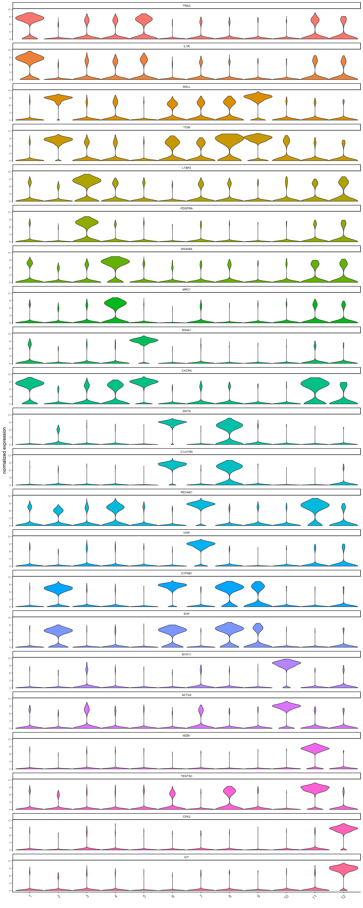
Manual cell type assignment was guided by the identification of cluster-specific marker genes using the scran method. To ensure that these predicted assignments accurately reflected the underlying biology, expression patterns were validated using dot plots and UMAP-based visualizations.
In the dot plot, the Y-axis represents marker genes corresponding to major cell types, while the X-axis shows cluster numbers (1–12) identified from the analysis. Dot size indicates the percentage of cells within a cluster expressing a given gene (with reference values of 25%, 50%, and 75%), and dot color reflects the average expression level of the gene in that cluster, scaled from 0.0 to 8.0 (normalized expression values).
GiottoVisuals::dotPlot(
g,
spat_unit = "cell",
feats = c( "FOXJ1", "DNAAF1", "SCGB2A1", #Bronchial Epithelial (Ciliated/ Club)
"VWF", "PECAM1", #Endothelial
"PDGFRA", "COL5A2", #Fibroblast
"PDGFRB", #Pericyte
"MYH11", "ACTA2", #Smooth Muscle
"SOX2", #Basal cells
"SFTA2", "ACE2", #Alveolar Epithelial Type 2
"AGER", "PDPN", #Alveolar Epithelial Type 1
"ERBB2", "EGFR", "EPCAM", "KRT7", #LUAD Cancer
"MET", "MYC", #Oncogenes
"NKG7", "CD3E", #NKcell/ Tcells
"MS4A1", "CD19", "CD79A", "MZB1", #Bcell/ Plasma
"CD68", "MRC1", "CD14", #Macrophage (Tissue-Resident: Alveolar, Interstitial) / Monocytes
"CD83", "CD86", #Dendritic
"KIT", "MS4A2" #Granulocytes (Mast/ etc...)
),
cluster_column = "leiden_clus",
dot_size = function(x) mean(x != 0) * 100,
dot_size_threshold = 0,
dot_scale = 6,
dot_color = mean,
dot_color_gradient = c("royalblue3", 'orangered', "yellow"),
gradient_style = "s",
expression_values = "normalized",
show_legend = TRUE,
legend_text = 10,
legend_symbol_size = 2,
background_color = "white",
axis_text = 10,
default_save_name = "dotPlot",
save_param = list(base_height = 8,base_width = 12)
)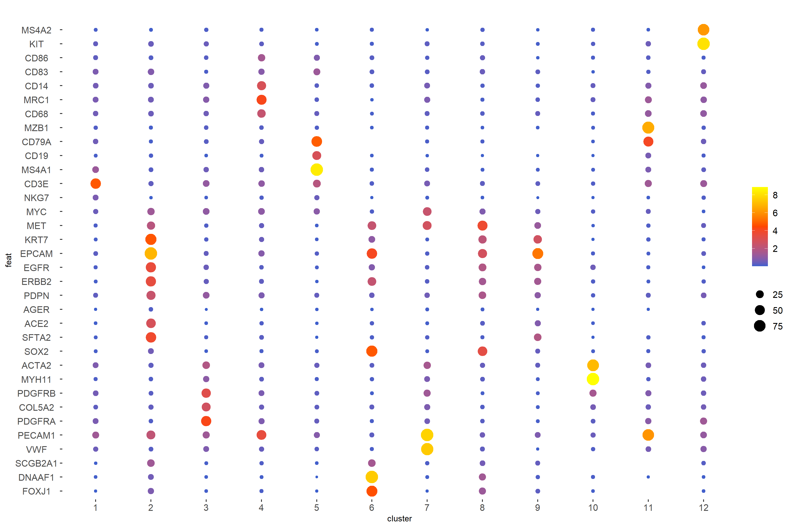
To complement the cluster-level overview from the dot plot, a smaller panel of representative marker genes (e.g., CD3E for T cells, SFTA2 for alveolar AT2 cells, PDGFRA for fibroblasts, CD68 for myeloid cells) was visualized using dimFeatPlot2D() on the UMAP. In these plots, the X and Y axes correspond to coordinates from the dimensional reduction (UMAP), each dot represents a single cell positioned based on transcriptional similarity, and the color scale (blue to green) indicates the expression level of the gene (0.0 to 10.0 normalized counts), with blue representing low or no expression and green representing high expression. Together, the dot plot and dimFeatPlot2D plots provide complementary perspectives that enabled manual annotation of clusters with their putative biological cell types.
# Representative single marker genes for broad cell types
single_marker_genes <- c(
"CD3E", # NK / T cells
"SFTA2", # Alveolar epithelial (AT2-like / LUAD cancer)
"PDGFRA", # Fibroblasts / Stromal
"CD68", # Myeloid (Macrophages/Monocytes/DCs)
"MS4A1", # B cells
"FOXJ1", # Ciliated epithelial
"PECAM1", # Endothelial cells
"SOX2", # Basal cells
"ACTA2", # Smooth muscle
"MZB1", # Plasma cells
"KIT" # Mast cells
)
dimFeatPlot2D(g,
expression_values = "normalized",
feats = single_marker_genes,
dim_reduction_to_use = "umap",
cow_n_col = 3,
point_size = 1,
cell_color_gradient = c("blue", "green"),
save_param = list(base_height = 20, base_width = 18))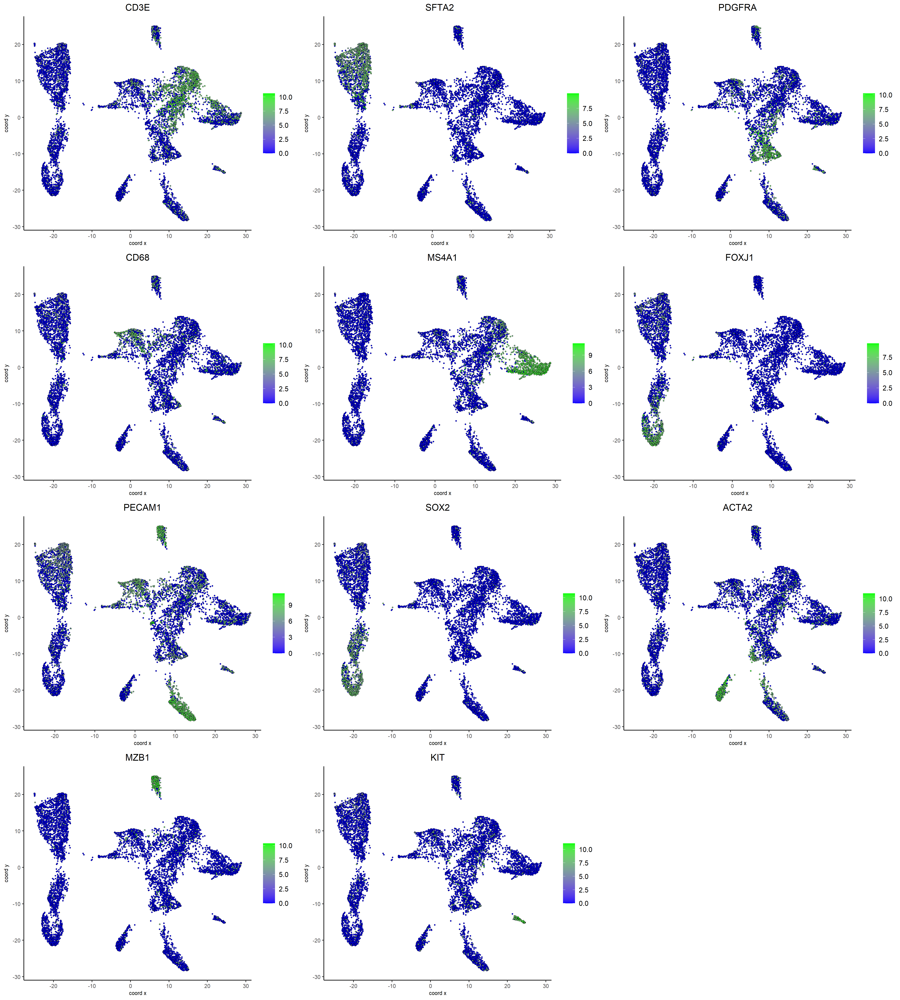
# Define cell types based on marker gene analysis
cell_types <- c(
"NK / T cells",
"Alveolar Epithelial cells (LUAD CANCER)", #Type 1, Type 2
"Stromal (Fibroblasts/ Pericytes)",
"Myeloid (Macrophages / Monocytes) and Dendritic cells",
"B cells",
"Bronchial Epithelial (Ciliated) cells", #possibility of tumor
"Endothelial cells",
"Basal cells",
"Alveolar Epithelial cells (LUAD CANCER)",
"Smooth muscle cells",
"Plasma cells",
"Granulocytes (Mast)"
)
# Assign names to cell types vector
names(cell_types) <- 1:length(cell_types)
# Annotate Giotto object with cell types
g <- annotateGiotto(gobject = g,
spat_unit = "cell",
annotation_vector = cell_types,
cluster_column = 'leiden_clus',
name = 'subannot_clus')
# Store annotated object
xenium_lungcancer_test <- g
norm_matrix <- Giotto::getExpression(xenium_lungcancer_test, values = "normalized", output = "matrix")
geometry <- getSpatialLocations(
gobject = xenium_lungcancer_test,
spat_unit = "cell", #default
output = "data.table"
)
geometry <- geometry[, c("sdimx", "sdimy")]
setnames(geometry, c("sdimx", "sdimy"), c("row", "col"))We use PROGENy to estimate pathway activity scores for each cell in the human lung cancer sample, capturing functional signaling rather than just gene expression. These activity scores are provided to MISTy later, which models how cells influence each other and contribute to the tumor microenvironment. By combining pathway activity with spatial coordinates, MISTy can estimate cell-cell interactions and functional contributions based on physical proximity and tissue context.
# Get PROGENy model for human
model <- get_progeny(organism = "human", top = 500)
# Estimate pathway activity using multivariate linear model
est_path_act <- run_mlm(norm_matrix, model, .mor = NULL)
# Convert to wide format for downstream analysis
est_path_act_wide <- est_path_act %>%
pivot_wider(id_cols = condition, names_from = source, values_from = score) %>%
column_to_rownames("condition")
# Clean column names
colnames(est_path_act_wide) <- est_path_act_wide %>%
clean_names(parsing_option = 0) %>%
colnames(.)
# Add progeny results to object
path_act_exprobj = createExprObj(t(est_path_act_wide), name = "progeny")
xenium_lungcancer_test <- setExpression(xenium_lungcancer_test, path_act_exprobj, name = "progeny")
# Extract cell type metadata
metadata <- getCellMetadata(g, spat_unit = "cell")
cell_types <- metadata$subannot_clus
# Create one-hot encoded matrix for cell types
cell_type_factor <- factor(cell_types)
cell_type_onehot <- model.matrix(~ cell_type_factor - 1)
colnames(cell_type_onehot) <- gsub("cell_type_factor", "", colnames(cell_type_onehot))
# Set proper row names using cell IDs
actual_cell_ids <- colnames(xenium_lungcancer_test@expression$cell$rna$raw)
rownames(cell_type_onehot) <- actual_cell_ids
# Clean column names
colnames(cell_type_onehot) <- cell_type_onehot %>%
as_tibble() %>%
clean_names(parsing_option = 0) %>%
colnames(.)
# Convert to tibble for MISTy
composition_xenium <- as_tibble(cell_type_onehot)MISTy, Tanevski et al. 2022, is a computational framework designed to explore how different biological factors interact within spatially resolved transcriptomics data.
Spatial views for MISTy in this tutorial are set with:
These views are combined to assess spatial variance in pathway activity.
The goal of this section is to determine suitable radii for defining
juxtaviews (immediate neighborhoods) and paraviews (broader tissue
environments). The analysis proceeds in two steps: first, by summarizing
nearest-neighbor distances to suggest candidate thresholds for the
juxtaview, and second, by testing different paraview radii to evaluate
how many cells contribute under a Gaussian weighting scheme. In MISTy,
the neighbor.thr parameter in add_juxtaview() sets the
maximum distance between two cells for them to be considered neighbors,
while the l (radius) parameter in
add_paraview() defines the effective radius of influence
for broader tissue neighborhoods.
# Calculate pairwise distances between all cells
geom_dist <- as.matrix(dist(geometry))
# Distance to nearest neighbor for each cell (excluding self)
nearest_neighbor_dist <- apply(geom_dist, 1, function(x) sort(x)[2])
# Calculate summary statistics
mean_nn_dist <- mean(nearest_neighbor_dist)
sd_nn_dist <- sd(nearest_neighbor_dist)
# Suggested thresholds to test
suggested_thresholds <- c(
mean_nn_dist, # Average nearest neighbor distance
mean_nn_dist + sd_nn_dist, # One standard deviation above mean
mean_nn_dist + 2*sd_nn_dist, # Two standard deviations above mean
quantile(nearest_neighbor_dist, 0.75), # 75th percentile
quantile(nearest_neighbor_dist, 0.90) # 90th percentile
)
# Display suggested thresholds
cat(sprintf("Mean nearest neighbor distance: %.1f μm\n", suggested_thresholds[1]),
sprintf("Mean + 1 SD: %.1f μm\n", suggested_thresholds[2]),
sprintf("Mean + 2 SD: %.1f μm\n", suggested_thresholds[3]),
sprintf("75th percentile: %.1f μm\n", suggested_thresholds[4]),
sprintf("90th percentile: %.1f μm\n", suggested_thresholds[5]))
# Output:
# Mean nearest neighbor distance: 6.5 μm
# Mean + 1 SD: 8.7 μm
# Mean + 2 SD: 11.0 μm
# 75th percentile: 7.4 μm
# 90th percentile: 9.1 μmBased on the nearest-neighbor distance summary, we test how many neighbors each cell would have on average for different candidate thresholds. This helps identify a threshold that captures immediate neighbors without including too many distant cells.
# Candidate thresholds in μm
test_thresholds <- c(6, 8, 10, 12, 15, 20)
# Calculate average number of neighbors for each threshold
for (thr in test_thresholds) {
neighbor_matrix <- geom_dist <= thr & geom_dist > 0
avg_neighbors <- mean(rowSums(neighbor_matrix))
cat(sprintf("Threshold %d: %.1f average neighbors per cell\n", thr, avg_neighbors))
}
# Output:
# Threshold 6: 0.9 average neighbors per cell
# Threshold 8: 2.3 average neighbors per cell
# Threshold 10: 3.9 average neighbors per cell
# Threshold 12: 5.9 average neighbors per cell
# Threshold 15: 9.4 average neighbors per cell
# Threshold 20: 16.5 average neighbors per cellThe output of the neighbor threshold analysis shows how the average number of neighbors per cell increases with larger juxtaview radii. We will select 10 µm for the juxtaview, as an average of ~3.9 neighbors per cell strikes a good balance for capturing tight, immediate cell–cell interactions. Choosing a smaller threshold would risk missing relevant neighbors, while a larger one would start including more distant cells that are less relevant for direct interactions. Next, we determine the effective radius of influence for the broader tissue structure in add_paraview(). We test a range of paraview radii and evaluate the number of neighbors contributing to the spatial weighting at different thresholds. Note: strong neighbors (weight > 0.5) are cells within ~8–10 μm of the target cell, while significant neighbors (weight > 0.1) are usually within ~15–18 μm.
para_radii <- c(11, 12, 15, 18, 20)
para_analysis <- data.frame()
for (radius in para_radii) {
# Calculate Gaussian weights
weight_matrix <- exp(-(geom_dist^2)/(2 * radius^2))
diag(weight_matrix) <- 0
# Calculate only significant and strong neighbors
significant_neighbors <- rowSums(weight_matrix > 0.1)
strong_neighbors <- rowSums(weight_matrix > 0.5)
result <- data.frame(
radius = radius,
avg_significant_neighbors = mean(significant_neighbors),
avg_strong_neighbors = mean(strong_neighbors)
)
para_analysis <- rbind(para_analysis, result)
}
print(para_analysis)
# Output:
# radius avg_significant_neighbors avg_strong_neighbors
# 1 11 22.83120 6.883919
# 2 12 26.98429 8.245740
# 3 15 41.16613 12.955272
# 4 18 57.87913 18.541534
# 5 20 70.39963 22.720980Based on this analysis, a paraview radius of 15 µm is chosen, as it captures a moderate number of neighbors—enough to model broader tissue interactions without including overly distant cells. This complements the juxtaview radius by balancing local vs. tissue-level spatial influence.
In this section, we demonstrate how to construct juxtaview and
paraview spatial views using both pathway activity and cell composition
data. The resulting final_misty_views object integrates
five complementary spatial views, enabling the simultaneous assessment
of both intrinsic and contextual determinants of pathway activity. These
views are defined as follows:
Together, these spatial views provide a comprehensive framework for quantifying how both cell-intrinsic states and spatially organized neighborhoods influence cellular signaling and functional heterogeneity in the tissue microenvironment.
# Create spatial views for pathway activity data
path_act_views <- create_initial_view(est_path_act_wide) %>%
add_juxtaview(geometry, neighbor.thr = 10) %>%
add_paraview(geometry, l = 15, family = "gaussian")
# Create spatial views for cell composition data
comp_views <- create_initial_view(composition_xenium) %>%
add_juxtaview(geometry, neighbor.thr = 10) %>%
add_paraview(geometry, l = 15, family = "gaussian")
# Combine pathway activity views with composition views
final_misty_views <- path_act_views %>%
add_views(create_view("juxtaview.composition.10",
comp_views[["juxtaview.10"]]$data)) %>%
add_views(create_view("paraview.composition.15",
comp_views[["paraview.15"]]$data))
# Standard MISTy analysis with random forest model (with intrinsic view)
run_misty(
views = final_misty_views,
cv.folds = 10,
model.function = random_forest_model,
results.folder = file.path(save_dir, "misty_results_complete")
)
# Spatial-only analysis with linear model and bypass intrinsic view
# Tests purely spatial predictive power without cell's own composition
run_misty(view = final_misty_views,
cv.folds = 10,
model.function = linear_model,
results.folder = file.path(save_dir, "misty_results_lm_complete"),
bypass.intra = TRUE)misty_results_complete is a MISTy result object
containing aggregated model performance metrics and spatial interaction
data from random forest models trained with intrinsic baseline
comparisons (bypass.intra = FALSE).
misty_results_complete_linear is a MISTy result object
containing aggregated model performance metrics and spatial interaction
data from linear models trained without intrinsic baseline interference
(bypass.intra = TRUE).
# Collect aggregated results from the random forest model version of the complete anlysis
misty_results_complete <- collect_results(file.path(save_dir, "misty_results_complete"))
# Collect aggregated results from the linear model version of the complete analysis
misty_results_complete_linear <- collect_results(file.path(save_dir, "misty_results_lm_complete"))With bypass.intra (default = FALSE):
intra.R² → Variance explained by intrinsic features within the same cell.
gain.R² → Additional variance explained by spatial context (beyond intrinsic features).
With bypass.intra (default = TRUE):
#Plot intra.R2 and gain.R2 values (random forest model MISTy object)
misty_results_complete %>%
plot_improvement_stats("intra.R2") %>%
plot_improvement_stats("gain.R2")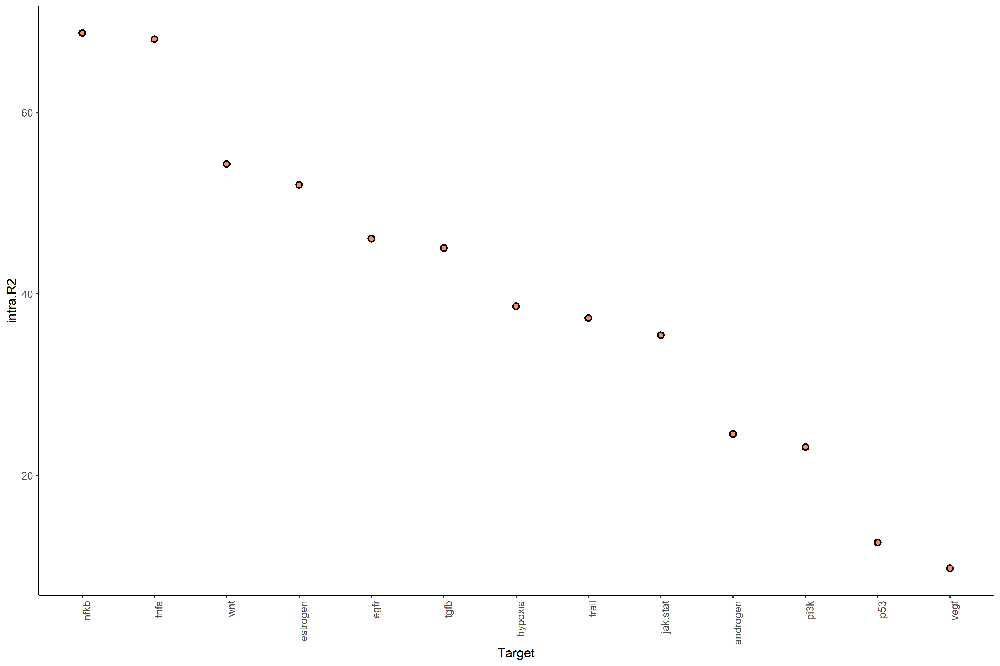
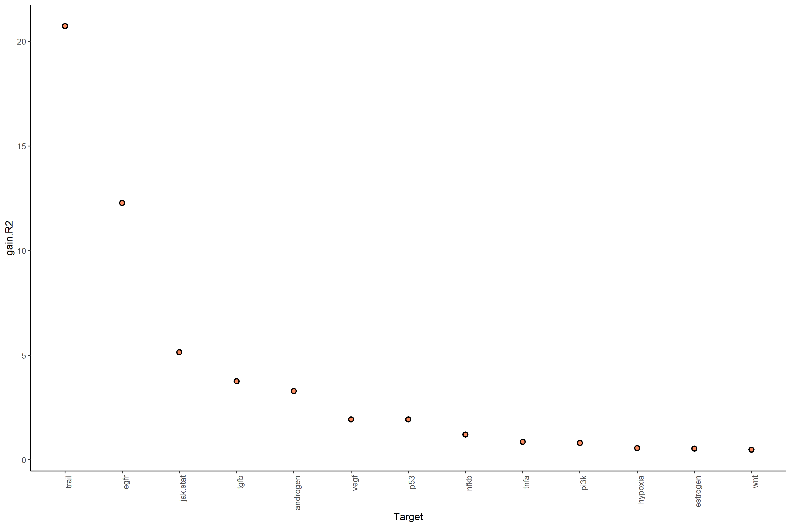
#Plot gain.R2 values (linear model MISTy object with bypassed intraview)
misty_results_complete_linear %>%
plot_improvement_stats("gain.R2")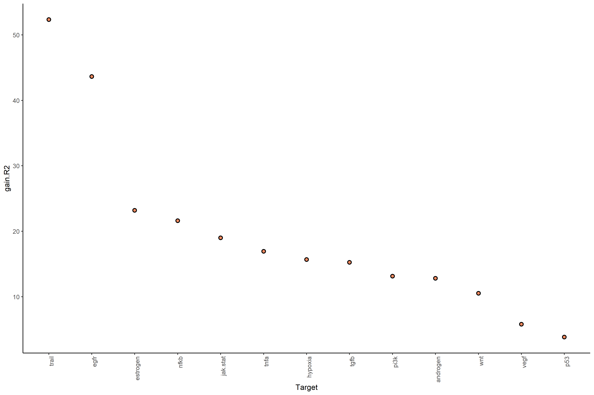
#View contributions with intrinsic information (random forest model MISTy object)
misty_results_complete %>%
plot_view_contributions() 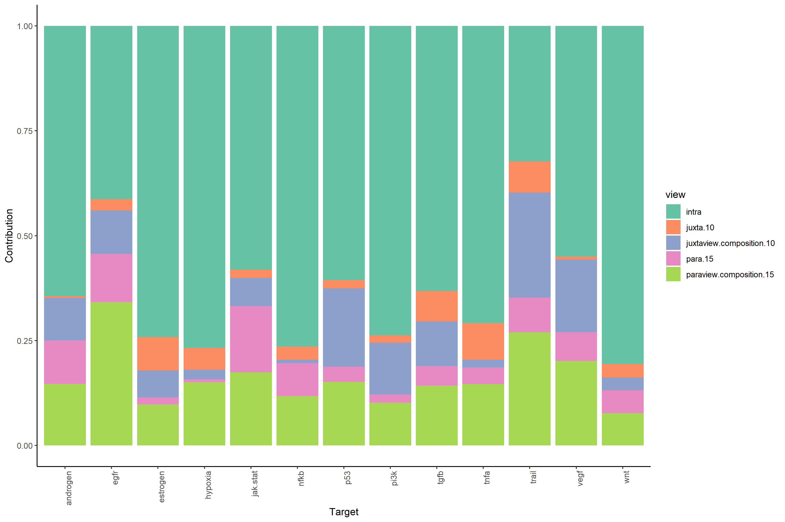
#View contributions without intrinsic information (linear model MISTy object with bypassed intraview)
misty_results_complete_linear %>%
plot_view_contributions()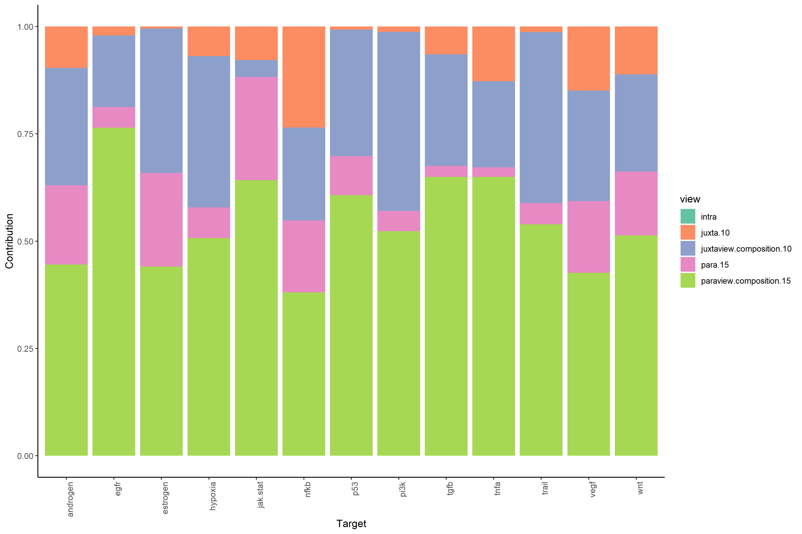
After evaluating model performance, MISTy interaction heatmaps then reveal the specific spatial relationships that drive predictive performance. These visualizations shows which spatial features (predictors) most strongly influence target expression patterns.
The following heatmaps are generated from MISTy object
misty_results_complete that uses random forest model with
bypass.intra = FALSE.
# Pathway-pathway interactions at close range (≤10μm)
# Shows additional neighboring pathway environment predictive power on target pathways
misty_results_complete %>%
plot_interaction_heatmap("juxta.10", clean = TRUE)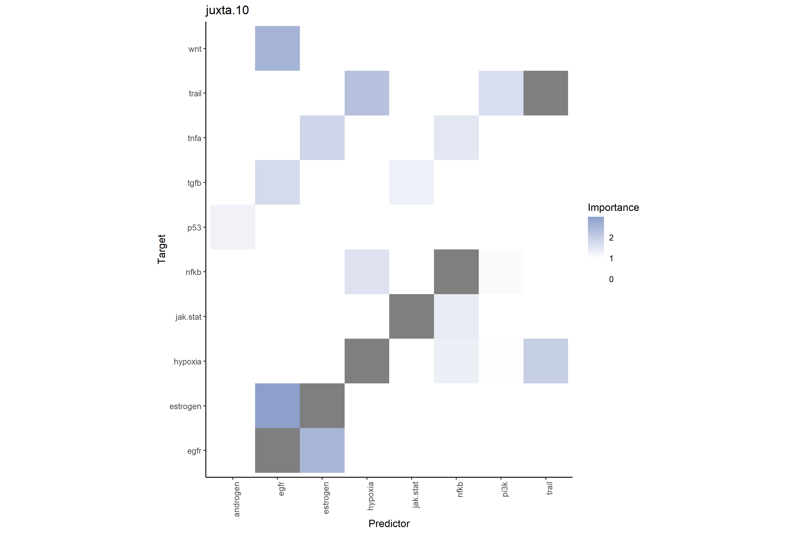
# Cell type-pathway interactions at close range (≤10μm)
# Shows additional predictive power of neighboring cell type compositions on target pathways
misty_results_complete %>%
plot_interaction_heatmap("juxtaview.composition.10", clean = TRUE)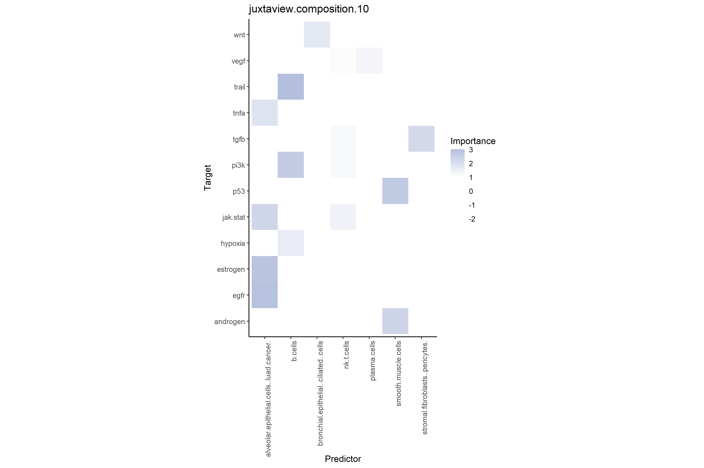
# Pathway-pathway interactions at broader range (≤15μm)
# Shows additional regional pathway environment predictive power on target pathways
misty_results_complete %>%
plot_interaction_heatmap("para.15", clean = TRUE)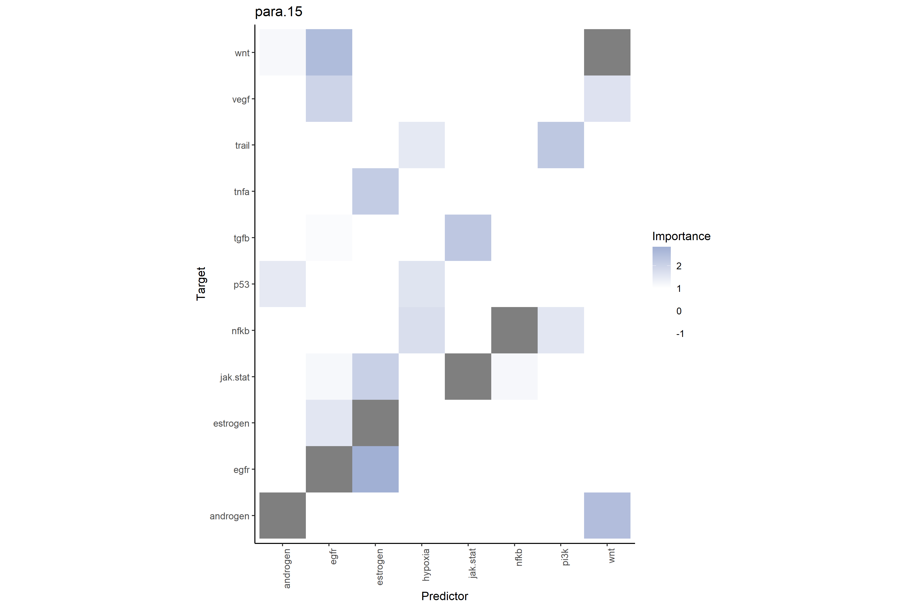
# Cell type-pathway interactions at broader range (≤15μm)
# Shows additional predictive power of regional cell type compositions on target pathways
misty_results_complete %>%
plot_interaction_heatmap("paraview.composition.15", clean = TRUE)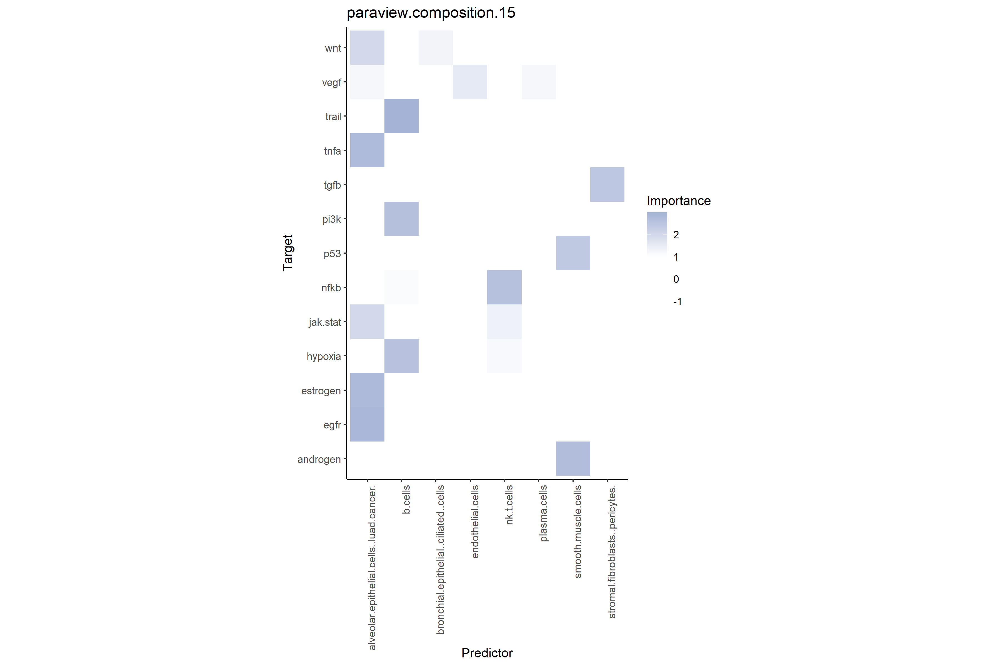
The following are heatmaps generated from MISTy object
misty_results_complete_linear that uses the linear model
with bypass.intra = TRUE.
# Pathway-pathway interactions at close range (≤10μm)
# Shows total neighboring pathway environment predictive power on target pathways
misty_results_complete_linear %>%
plot_interaction_heatmap("juxta.10", clean = TRUE) 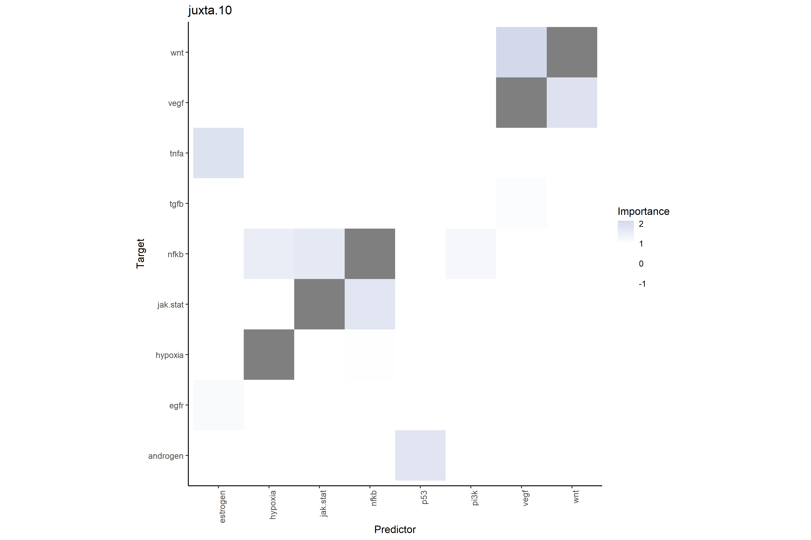
# Cell type-pathway interactions at close range (≤10μm)
# Shows total predictive power of neighboring cell type compositions on target pathways
misty_results_complete_linear %>%
plot_interaction_heatmap("juxtaview.composition.10", clean = TRUE)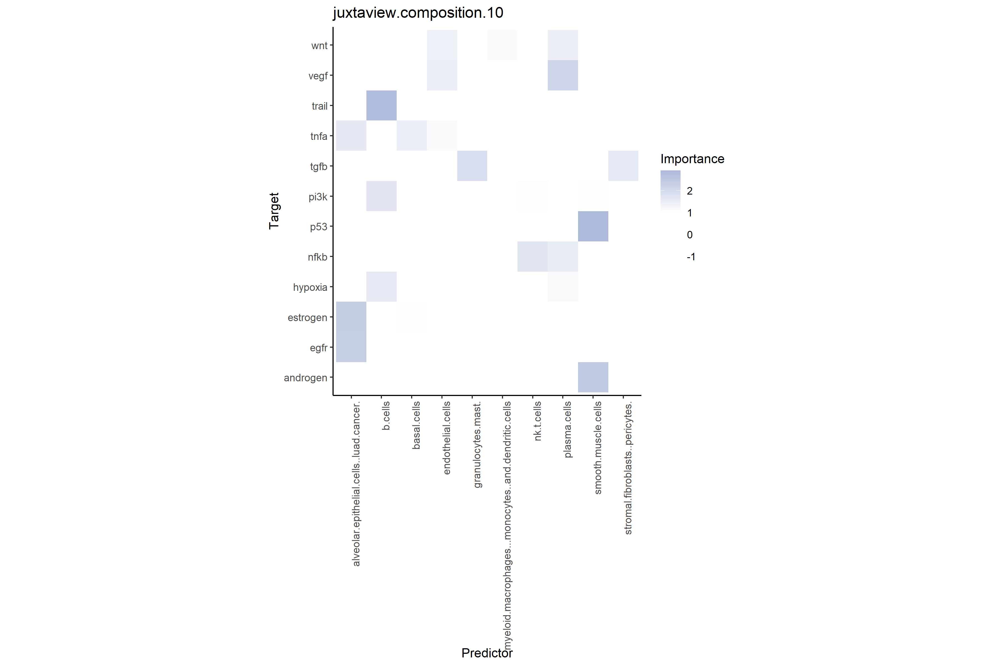
# Pathway-pathway interactions at broader range (≤15μm)
# Shows total regional pathway environment predictive power on target pathways
misty_results_complete_linear %>%
plot_interaction_heatmap("para.15", clean = TRUE) 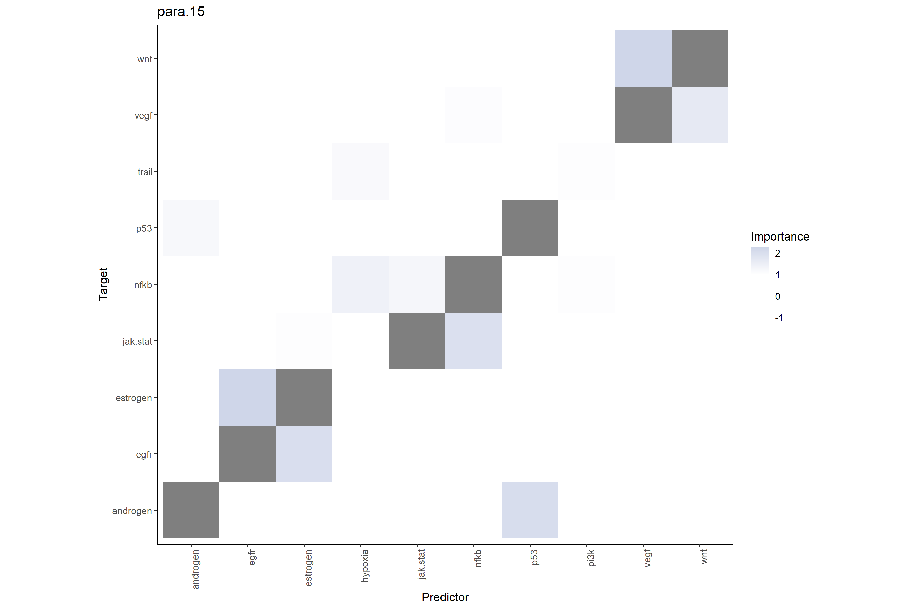
# Cell type-pathway interactions at broader range (≤15μm)
# Shows total predictive power of regional cell type compositions on target pathways
misty_results_complete_linear %>%
plot_interaction_heatmap("paraview.composition.15", clean = TRUE)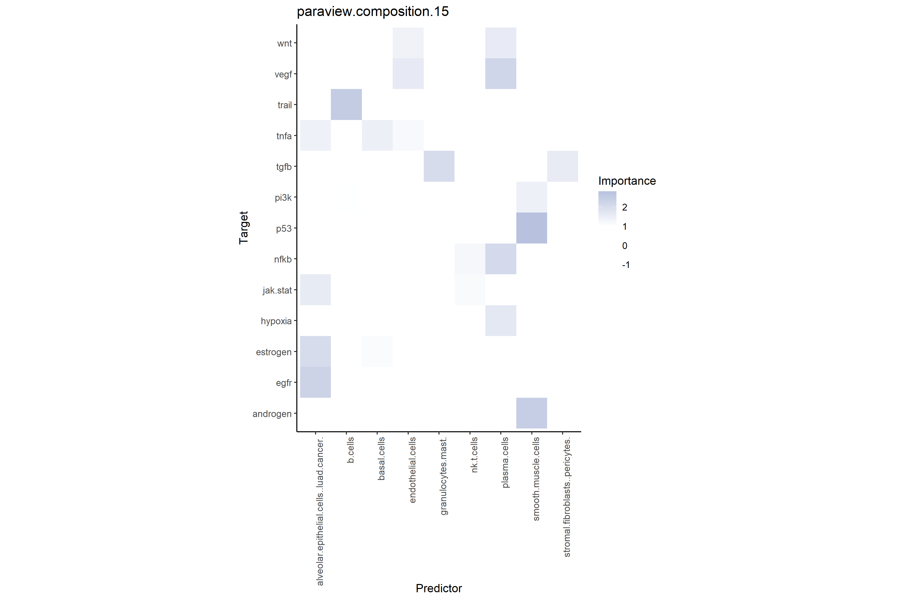
#**Example 1: Visualize B cells and TRAIL pathway activity. TRAIL is involved in immune-mediated apoptosis, and high activity is expected near immune cells.
# Visualize TRAIL pathway activity
spatFeatPlot2D(xenium_lungcancer_test,
spat_unit = "cell",
expression_values = "progeny",
show_image = TRUE,
feats = "trail",
gradient_style = "sequential",
cell_color_gradient = c("blue", "orangered", "yellow"),
background_color = "black",
point_size = 1,
save_plot = TRUE,
save_param = list(
base_height = 8,
base_width = 12,
dpi = 600,
units = "in",
save_format = "png",
save_name = "14_TRAILPathway",
save_dir = save_dir
))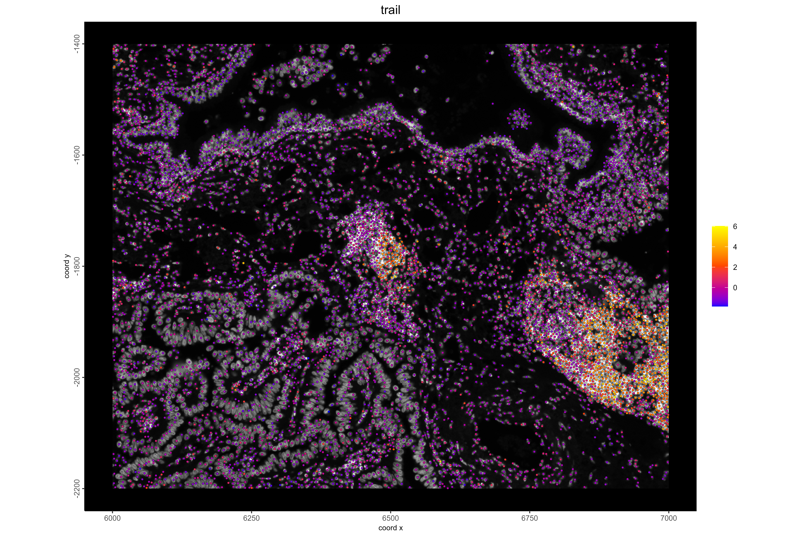
# Visualize B cell locations
spatPlot2D(xenium_lungcancer_test,
spat_unit = "cell",
cell_color = "subannot_clus",
show_image = TRUE,
select_cell_groups = "B cells",
point_size = 1,
other_point_size = 0.7,
other_cell_color = "#434343",
background_color = "black",
save_plot = TRUE,
save_param = list(
base_height = 8,
base_width = 12,
dpi = 600,
units = "in",
save_format = "png",
save_name = "15_BCellLocations",
save_dir = save_dir
))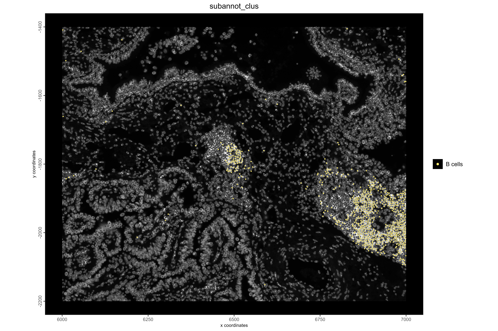
#Example 2: Visualize LUAD cancer cells and EGFR pathway activity. EGFR is frequently dysregulated in lung adenocarcinoma, and high activity is expected in cancer regions.
#Visualize EGFR pathway activity
spatFeatPlot2D(xenium_lungcancer_test,
spat_unit = "cell",
expression_values = "progeny",
show_image = TRUE,
feats = "egfr",
gradient_style = "sequential",
cell_color_gradient = c("blue", "orangered", "green"),
background_color = "black",
point_size = 1,
save_plot = TRUE,
save_param = list(
base_height = 8,
base_width = 12,
dpi = 600,
units = "in",
save_format = "png",
save_name = "16_EGFRPathway",
save_dir = save_dir
))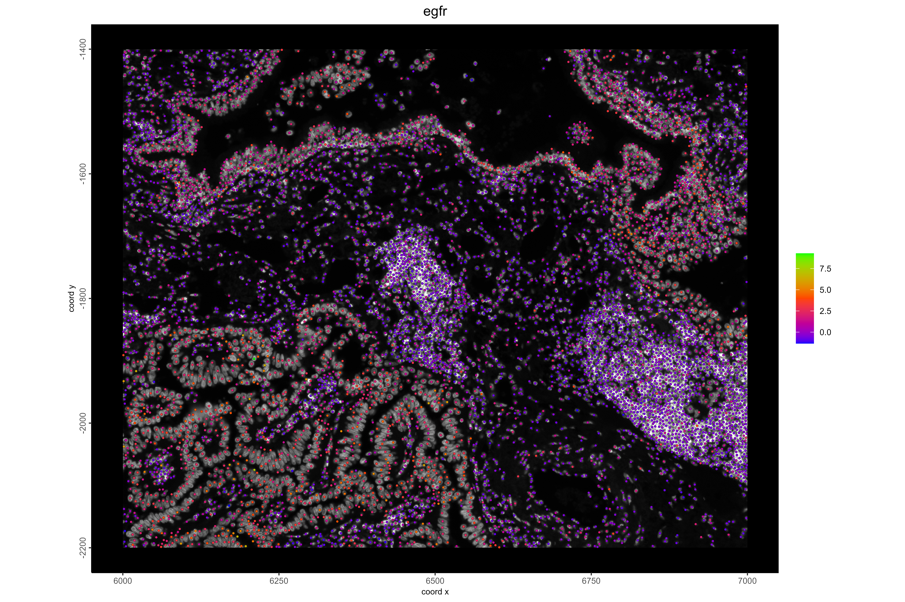
# Visualize LUAD cancer cell locations
spatPlot2D(xenium_lungcancer_test,
spat_unit = "cell",
cell_color = "subannot_clus",
show_image = TRUE,
select_cell_groups = "Alveolar Epithelial cells (LUAD CANCER)",
point_size = 1.1,
other_point_size = 0.7,
other_cell_color = "#434343",
background_color = "black",
save_plot = TRUE,
save_param = list(
base_height = 8,
base_width = 12,
dpi = 600,
units = "in",
save_format = "png",
save_name = "17_LUADCancerLocations",
save_dir = save_dir
))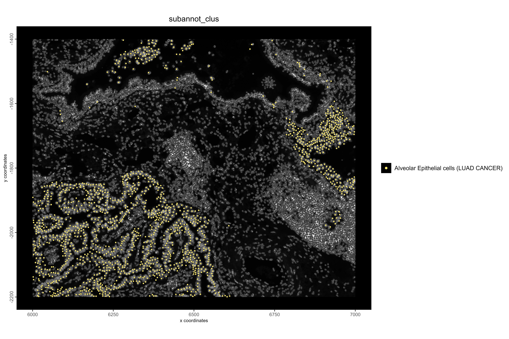
#Example 3: Visualize NK/T cells and NFκB pathway activity. NFκB plays a key role in immune activation, and high activity is expected in immune cell regions. In lung cancer, NK/T cells often cluster near tumor boundaries.
# Visualize NFκB pathway activity
spatFeatPlot2D(xenium_lungcancer_test,
spat_unit = "cell",
show_image = TRUE,
expression_values = "progeny",
feats = "nfkb",
gradient_style = "sequential",
cell_color_gradient = c("blue","purple", "red", "yellow"),
background_color = "black",
point_size = 1,
save_plot = TRUE,
save_param = list(
base_height = 8,
base_width = 12,
dpi = 600,
units = "in",
save_format = "png",
save_name = "18_NFKBPathway",
save_dir = save_dir
))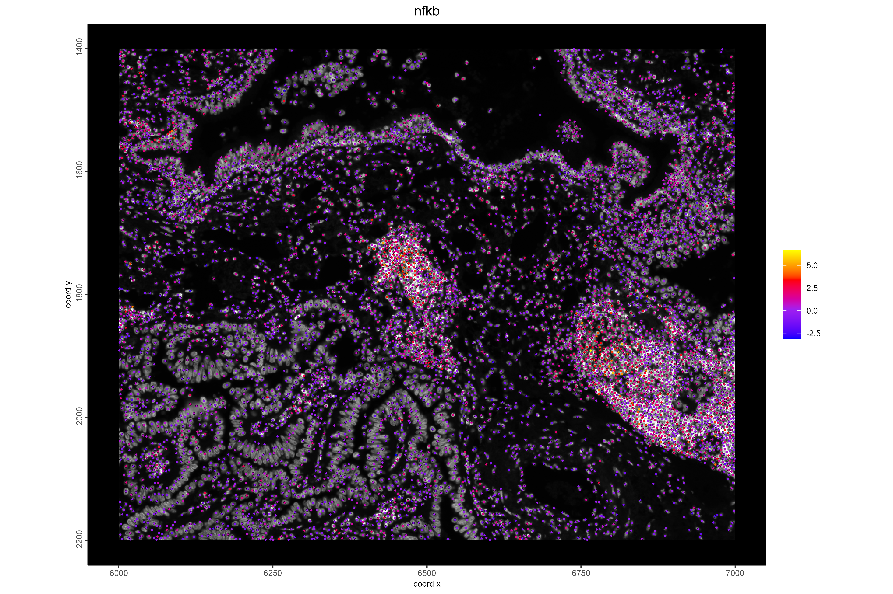
# Visualize NK/T cell locations
spatPlot2D(xenium_lungcancer_test,
spat_unit = "cell",
show_image = TRUE,
cell_color = "subannot_clus",
select_cell_groups = "NK / T cells",
point_size = 1,
other_point_size = 0.6,
other_cell_color = "#434343",
background_color = "black",
save_plot = TRUE,
save_param = list(
base_height = 8,
base_width = 12,
dpi = 600,
units = "in",
save_format = "png",
save_name = "19_NKTCellLocations",
save_dir = save_dir
))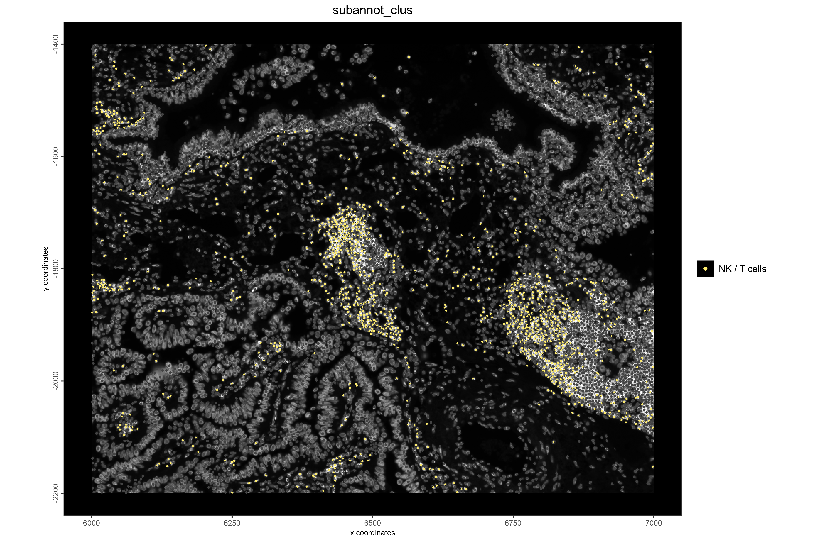
devtools::session_info()Session info
setting value
version R version 4.4.1 (2024-06-14 ucrt)
os Windows 11 x64 (build 26100)
system x86_64, mingw32
ui RStudio
language (EN)
collate English_United States.utf8
ctype English_United States.utf8
tz America/New_York
date 2025-09-19
rstudio 2024.09.0+375 Cranberry Hibiscus (desktop)
pandoc 3.2 @ C:/Program Files/RStudio/resources/app/bin/quarto/bin/tools/ (via rmarkdown)
Packages
package * version date (UTC) lib source
abind 1.4-8 2024-09-12 [1] CRAN (R 4.4.1)
arrow 18.0.0 2024-10-28 [1] https://apache.r-universe.dev (R 4.4.1)
assertthat 0.2.1 2019-03-21 [1] CRAN (R 4.4.2)
babelgene 22.9 2022-09-29 [1] CRAN (R 4.4.2)
backports 1.5.0 2024-05-23 [1] CRAN (R 4.4.0)
beachmat 2.20.0 2024-05-01 [1] Bioconduc~
Biobase * 2.66.0 2024-10-29 [1] Bioconduc~
BiocGenerics * 0.52.0 2024-10-29 [1] Bioconduc~
BiocNeighbors 2.0.0 2024-10-29 [1] Bioconduc~
BiocParallel 1.38.0 2024-05-01 [1] Bioconduc~
BiocSingular 1.20.0 2024-05-01 [1] Bioconduc~
bit 4.5.0 2024-09-20 [1] CRAN (R 4.4.2)
bit64 4.5.2 2024-09-22 [1] CRAN (R 4.4.2)
bluster 1.16.0 2024-10-29 [1] Bioconduc~
cachem 1.1.0 2024-05-16 [1] CRAN (R 4.4.1)
cellranger 1.1.0 2016-07-27 [1] CRAN (R 4.4.2)
checkmate 2.3.2 2024-07-29 [1] CRAN (R 4.4.1)
cli 3.6.3 2024-06-21 [1] CRAN (R 4.4.1)
cluster 2.1.6 2023-12-01 [2] CRAN (R 4.4.1)
codetools 0.2-20 2024-03-31 [2] CRAN (R 4.4.1)
colorRamp2 0.1.0 2022-12-21 [1] CRAN (R 4.4.1)
colorspace 2.1-1 2024-07-26 [1] CRAN (R 4.4.1)
cowplot 1.1.3 2024-01-22 [1] CRAN (R 4.4.1)
crayon 1.5.3 2024-06-20 [1] CRAN (R 4.4.1)
crosstalk 1.2.1 2023-11-23 [1] CRAN (R 4.4.1)
curl 5.2.3 2024-09-20 [1] CRAN (R 4.4.1)
data.table * 1.16.0 2024-08-27 [1] CRAN (R 4.4.1)
dbscan 1.2-0 2024-06-28 [1] CRAN (R 4.4.1)
decoupleR * 2.10.0 2024-06-16 [1] Bioconductor 3.19 (R 4.4.0)
DelayedArray 0.32.0 2024-10-29 [1] Bioconduc~
deldir 2.0-4 2024-02-28 [1] CRAN (R 4.4.0)
devtools 2.4.5 2022-10-11 [1] CRAN (R 4.4.2)
digest 0.6.37 2024-08-19 [1] CRAN (R 4.4.1)
distances 0.1.11 2024-07-31 [1] CRAN (R 4.4.2)
dplyr * 1.1.4 2023-11-17 [1] CRAN (R 4.4.1)
dqrng 0.4.1 2024-05-28 [1] CRAN (R 4.4.2)
edgeR 4.4.0 2024-10-29 [1] Bioconduc~
ellipsis 0.3.2 2021-04-29 [1] CRAN (R 4.4.1)
evaluate 1.0.0 2024-09-17 [1] CRAN (R 4.4.1)
fansi 1.0.6 2023-12-08 [1] CRAN (R 4.4.1)
farver 2.1.2 2024-05-13 [1] CRAN (R 4.4.1)
fastmap 1.2.0 2024-05-15 [1] CRAN (R 4.4.1)
filelock 1.0.3 2023-12-11 [1] CRAN (R 4.4.2)
forcats * 1.0.0 2023-01-29 [1] CRAN (R 4.4.2)
fs 1.6.4 2024-04-25 [1] CRAN (R 4.4.1)
furrr 0.3.1 2022-08-15 [1] CRAN (R 4.4.2)
future * 1.34.0 2024-07-29 [1] CRAN (R 4.4.2)
future.apply 1.11.3 2024-10-27 [1] CRAN (R 4.4.2)
generics 0.1.3 2022-07-05 [1] CRAN (R 4.4.1)
GenomeInfoDb * 1.42.0 2024-10-29 [1] Bioconduc~
GenomeInfoDbData 1.2.13 2024-11-08 [1] Bioconductor
GenomicRanges * 1.58.0 2024-10-29 [1] Bioconduc~
ggplot2 * 3.5.1 2024-04-23 [1] CRAN (R 4.4.1)
ggrepel 0.9.6 2024-09-07 [1] CRAN (R 4.4.1)
Giotto * 4.2.1 2025-02-18 [1] Github (drieslab/Giotto@7a5ac04)
GiottoClass * 0.4.7 2025-02-18 [1] Github (drieslab/GiottoClass@2ad48fa)
GiottoUtils 0.2.4 2025-02-18 [1] Github (drieslab/GiottoUtils@f2e0aab)
GiottoVisuals 0.2.12 2025-02-18 [1] Github (drieslab/GiottoVisuals@6d3d44a)
globals 0.16.3 2024-03-08 [1] CRAN (R 4.4.0)
glue 1.8.0 2024-09-30 [1] CRAN (R 4.4.1)
gridExtra 2.3 2017-09-09 [1] CRAN (R 4.4.2)
gtable 0.3.5 2024-04-22 [1] CRAN (R 4.4.1)
gtools 3.9.5 2023-11-20 [1] CRAN (R 4.4.1)
hms 1.1.3 2023-03-21 [1] CRAN (R 4.4.2)
htmltools 0.5.8.1 2024-04-04 [1] CRAN (R 4.4.1)
htmlwidgets 1.6.4 2023-12-06 [1] CRAN (R 4.4.1)
httpuv 1.6.15 2024-03-26 [1] CRAN (R 4.4.1)
httr 1.4.7 2023-08-15 [1] CRAN (R 4.4.1)
igraph 2.0.3 2024-03-13 [1] CRAN (R 4.4.1)
IRanges * 2.38.1 2024-07-03 [1] Bioconduc~
irlba 2.3.5.1 2022-10-03 [1] CRAN (R 4.4.1)
janitor * 2.2.1 2024-12-22 [1] CRAN (R 4.4.2)
jsonlite 1.8.9 2024-09-20 [1] CRAN (R 4.4.1)
knitr 1.48 2024-07-07 [1] CRAN (R 4.4.1)
labeling 0.4.3 2023-08-29 [1] CRAN (R 4.4.0)
later 1.3.2 2023-12-06 [1] CRAN (R 4.4.1)
lattice 0.22-6 2024-03-20 [2] CRAN (R 4.4.1)
lazyeval 0.2.2 2019-03-15 [1] CRAN (R 4.4.1)
lifecycle 1.0.4 2023-11-07 [1] CRAN (R 4.4.1)
limma 3.62.1 2024-11-03 [1] Bioconduc~
listenv 0.9.1 2024-01-29 [1] CRAN (R 4.4.2)
locfit 1.5-9.10 2024-06-24 [1] CRAN (R 4.4.2)
logger 0.4.0 2024-10-22 [1] CRAN (R 4.4.2)
lubridate * 1.9.3 2023-09-27 [1] CRAN (R 4.4.2)
magick 2.8.5 2024-09-20 [1] CRAN (R 4.4.2)
magrittr 2.0.3 2022-03-30 [1] CRAN (R 4.4.1)
MASS 7.3-60.2 2024-04-26 [2] CRAN (R 4.4.1)
Matrix * 1.7-0 2024-04-26 [2] CRAN (R 4.4.1)
MatrixGenerics * 1.16.0 2024-05-01 [1] Bioconduc~
matrixStats * 1.4.1 2024-09-08 [1] CRAN (R 4.4.1)
memoise 2.0.1 2021-11-26 [1] CRAN (R 4.4.1)
metapod 1.14.0 2024-10-29 [1] Bioconduc~
mime 0.12 2021-09-28 [1] CRAN (R 4.4.0)
miniUI 0.1.1.1 2018-05-18 [1] CRAN (R 4.4.1)
mistyR * 1.12.0 2024-05-01 [1] Bioconductor 3.19 (R 4.4.0)
msigdbr * 7.5.1 2022-03-30 [1] CRAN (R 4.4.2)
munsell 0.5.1 2024-04-01 [1] CRAN (R 4.4.1)
OmnipathR * 3.12.4 2024-10-02 [1] Bioconductor 3.19 (R 4.4.1)
parallelly 1.38.0 2024-07-27 [1] CRAN (R 4.4.1)
pillar 1.9.0 2023-03-22 [1] CRAN (R 4.4.1)
pkgbuild 1.4.4 2024-03-17 [1] CRAN (R 4.4.1)
pkgconfig 2.0.3 2019-09-22 [1] CRAN (R 4.4.1)
pkgload 1.4.0 2024-06-28 [1] CRAN (R 4.4.1)
plotly 4.10.4 2024-01-13 [1] CRAN (R 4.4.1)
plyr 1.8.9 2023-10-02 [1] CRAN (R 4.4.1)
png 0.1-8 2022-11-29 [1] CRAN (R 4.4.0)
prettyunits 1.2.0 2023-09-24 [1] CRAN (R 4.4.1)
profvis 0.4.0 2024-09-20 [1] CRAN (R 4.4.1)
progeny * 1.26.0 2024-05-01 [1] Bioconductor 3.19 (R 4.4.0)
progress 1.2.3 2023-12-06 [1] CRAN (R 4.4.2)
progressr 0.14.0 2023-08-10 [1] CRAN (R 4.4.1)
promises 1.3.0 2024-04-05 [1] CRAN (R 4.4.1)
purrr * 1.0.2 2023-08-10 [1] CRAN (R 4.4.1)
R.methodsS3 1.8.2 2022-06-13 [1] CRAN (R 4.4.0)
R.oo 1.26.0 2024-01-24 [1] CRAN (R 4.4.0)
R.utils 2.12.3 2023-11-18 [1] CRAN (R 4.4.2)
R6 2.5.1 2021-08-19 [1] CRAN (R 4.4.1)
ragg 1.3.3 2024-09-11 [1] CRAN (R 4.4.1)
rappdirs 0.3.3 2021-01-31 [1] CRAN (R 4.4.1)
RColorBrewer 1.1-3 2022-04-03 [1] CRAN (R 4.4.0)
Rcpp 1.0.13-1 2024-11-02 [1] CRAN (R 4.4.1)
RcppAnnoy 0.0.22 2024-01-23 [1] CRAN (R 4.4.1)
readr * 2.1.5 2024-01-10 [1] CRAN (R 4.4.2)
readxl 1.4.3 2023-07-06 [1] CRAN (R 4.4.2)
remotes 2.5.0 2024-03-17 [1] CRAN (R 4.4.1)
reshape2 1.4.4 2020-04-09 [1] CRAN (R 4.4.1)
reticulate * 1.39.0 2024-09-05 [1] CRAN (R 4.4.1)
rjson 0.2.23 2024-09-16 [1] CRAN (R 4.4.1)
rlang 1.1.4 2024-06-04 [1] CRAN (R 4.4.1)
rlist 0.4.6.2 2021-09-03 [1] CRAN (R 4.4.2)
rmarkdown 2.28 2024-08-17 [1] CRAN (R 4.4.1)
rstudioapi 0.16.0 2024-03-24 [1] CRAN (R 4.4.1)
rsvd 1.0.5 2021-04-16 [1] CRAN (R 4.4.1)
rvest 1.0.4 2024-02-12 [1] CRAN (R 4.4.2)
S4Arrays 1.6.0 2024-10-29 [1] Bioconduc~
S4Vectors * 0.44.0 2024-10-29 [1] Bioconduc~
ScaledMatrix 1.12.0 2024-05-01 [1] Bioconduc~
scales 1.3.0 2023-11-28 [1] CRAN (R 4.4.1)
scattermore 1.2 2023-06-12 [1] CRAN (R 4.4.1)
scran 1.34.0 2024-10-29 [1] Bioconduc~
sctransform * 0.4.1 2023-10-19 [1] CRAN (R 4.4.2)
scuttle 1.16.0 2024-10-29 [1] Bioconduc~
selectr 0.4-2 2019-11-20 [1] CRAN (R 4.4.2)
sessioninfo 1.2.2 2021-12-06 [1] CRAN (R 4.4.1)
shiny 1.9.1 2024-08-01 [1] CRAN (R 4.4.1)
SingleCellExperiment * 1.28.0 2024-10-29 [1] Bioconduc~
snakecase 0.11.1 2023-08-27 [1] CRAN (R 4.4.2)
SparseArray 1.6.0 2024-10-29 [1] Bioconduc~
SpatialExperiment * 1.16.0 2024-10-29 [1] Bioconduc~
statmod 1.5.0 2023-01-06 [1] CRAN (R 4.4.1)
stringi 1.8.4 2024-05-06 [1] CRAN (R 4.4.0)
stringr * 1.5.1 2023-11-14 [1] CRAN (R 4.4.1)
SummarizedExperiment * 1.36.0 2024-10-29 [1] Bioconduc~
systemfonts 1.1.0 2024-05-15 [1] CRAN (R 4.4.1)
terra 1.8-0 2024-11-08 [1] Github (rspatial/terra@b0f2224)
textshaping 0.4.0 2024-05-24 [1] CRAN (R 4.4.1)
tibble * 3.2.1 2023-03-20 [1] CRAN (R 4.4.1)
tidyr * 1.3.1 2024-01-24 [1] CRAN (R 4.4.1)
tidyselect 1.2.1 2024-03-11 [1] CRAN (R 4.4.1)
tidyverse * 2.0.0 2023-02-22 [1] CRAN (R 4.4.2)
timechange 0.3.0 2024-01-18 [1] CRAN (R 4.4.2)
tzdb 0.4.0 2023-05-12 [1] CRAN (R 4.4.2)
UCSC.utils 1.2.0 2024-10-29 [1] Bioconduc~
urlchecker 1.0.1 2021-11-30 [1] CRAN (R 4.4.1)
usethis 3.0.0 2024-07-29 [1] CRAN (R 4.4.1)
utf8 1.2.4 2023-10-22 [1] CRAN (R 4.4.1)
uwot 0.2.2 2024-04-21 [1] CRAN (R 4.4.1)
vctrs 0.6.5 2023-12-01 [1] CRAN (R 4.4.1)
viridisLite 0.4.2 2023-05-02 [1] CRAN (R 4.4.1)
vroom 1.6.5 2023-12-05 [1] CRAN (R 4.4.2)
withr 3.0.1 2024-07-31 [1] CRAN (R 4.4.1)
xfun 0.48 2024-10-03 [1] CRAN (R 4.4.1)
xml2 1.3.6 2023-12-04 [1] CRAN (R 4.4.1)
xtable 1.8-4 2019-04-21 [1] CRAN (R 4.4.1)
XVector 0.44.0 2024-05-01 [1] Bioconduc~
yaml 2.3.10 2024-07-26 [1] CRAN (R 4.4.1)
zlibbioc 1.50.0 2024-05-01 [1] Bioconduc~
[1] C:/Users/your_username/AppData/Local/R/win-library/4.4
[2] C:/Program Files/R/R-4.4.1/library
Python configuration
python: C:/Users/your_username/anaconda3/envs/giotto_env/python.exe
libpython: C:/Users/your_username/anaconda3/envs/giotto_env/python310.dll
pythonhome: C:/Users/your_username/anaconda3/envs/giotto_env
version: 3.10.2 | packaged by conda-forge | (main, Mar 8 2022, 15:47:33) [MSC v.1929 64 bit (AMD64)]
Architecture: 64bit
numpy: C:/Users/your_username/anaconda3/envs/giotto_env/Lib/site-packages/numpy
numpy_version: 2.1.3
NOTE: Python version was forced by use_python() function